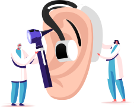

어르신 복지
보청기 구매비 지원

청력에 문제가 있으신 어르신이라면, 보청기 바로 신청하세요.
[국민건강보험]에서 어르신의 청력 건강을 챙겨드립니다.
[국민건강보험]에서 어르신의 청력 건강을 챙겨드립니다.
지원내용 및 자격요건
- 청각 장애인으로 등록 되어 있어야 지원금 신청 가능 (나이 무관)
- 청각장애인 정부 지원금 최대 131만원
- 보건복지부에 고시된 제품에 한해 5년에 1회 한정, 보청기 1대 지원
숙지사항
- 이비인후과에 방문하셔서 청각장애 진단을 받으셔야 합니다. (전화로 진단 가능 병원인지 먼저 확인하세요.)
- 보청기 지원금을 받기 위한 절차가 간단하지 않아 거주시 읍,면 주민선터에서 먼저 상담 후 구매 신청을 권장합니다.